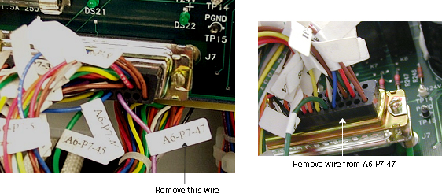
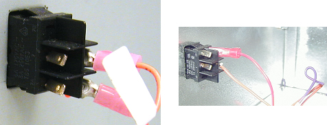
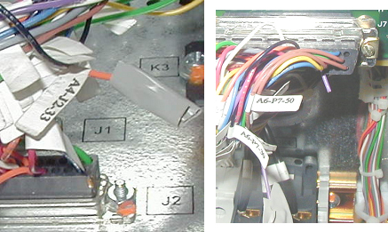

Operating Documentation
Direction 5134894-800, Rev# 9
GOC4 Upgrade Installation & Service Information
Operating Documentation |
| Required Persons | Preliminary Reqs | Procedure | Finalization |
|---|---|---|---|
| 1 | 60 mins |
When Lightspeed Ultra 4/ 8/ or 16 systems with H2 PDUs (model 2269902) are upgraded to GRE Consoles, the gantry 120 VAC power may remain on after the gantry service switch or the PDU back service switch is turned off. Systems having a PDU with this problem risk having the service switches in the PDU and in the gantry disabled resulting in the gantry 120 VAC power remaining on. When servicing electrical components in the CT gantry, the only safe method is to LOTO at the A1 panel. The root cause of the problem is extra wires were inadvertently added in the PDU internal harnesses. These extra wires will need to be cut and taped inside the PDU.
| Last Revised: | 30 March, 2004 |
| Item | Qty | Effectivity | Part# | Manufacturer | |
|---|---|---|---|---|---|
| Fluke 87 Digital Meter | 1 | - | - | - | |
| Soldering Iron | 1 | - | - | - | |
| Item | Qty | Effectivity | Part# | Manufacturer |
|---|---|---|---|---|
| Electrical Tape | AR | - | - | - |
| ELECTROCUTION HAZARD. | |
| HIGH VOLTAGE PRESENT. | |
| Use Proper Lock-Out/Tag-out procedures before beginning work in the PDU. |
Follow appropriate CT Safety precautions when working in the PDU.
Open the top of the PDU and locate the 120 VAC switch on the rear of the PDU.
Check the wirers on switch 1-1 (see Illustration 1.
Illustration 1: PDU Switch 1-1

There should Only be Two wires going to SW 1 one wire on SW 1 & 2.
If your PDU is wired incorrectly -wires on the on SW1 –1 - continue with the PDU fix procedure.
For all PDUs that are wired correctly this is the end of the procedure. Replace and close all covers.
| ELECTROCUTION HAZARD. | |
| HIGH VOLTAGE PRESENT. | |
| Use Proper Lock-Out/Tag-out procedures before beginning work in the PDU. |
Before you start, Shut down Console & system and LOTO at A1.
Remove the PDU top and front covers. Locate connector J2 on the bottom panel of the PDU (see Illustration 2).
The wire on J2- pin 23 may be labeled with a tag A4 J2-23 (orange wire).
Illustration 2: PDU A4 J2-33 with (left) and without (right) extra wire

Remove the extra wire shown at left in Illustration 2.
Cut orange wire J2 –33 ½ “ above the connector. Strip the end of the wire with the label.
Remove the push on connector from SW1 –1 ( there should be two (2) orange and one (1) purple wire.
Connect your DVM to the orange wire on J2 -33, set to Ohm and locate the correct orange wire going to switch SW1. When you find the correct orange wire cut the wire on the switch end and tape up both using electrical tape.
Locate connector J7 on the PDU control board (see Illustration 3)
The wire on J7- pin 47 may be labeled with a tag A6 P7-47 (purple wire).
Illustration 3: PDU A6 P7-47

Cut purple wire J7 –47 (A6 P7- 47) ½ “ above the connector. Strip the end of the wire with the label.
The push on connector from SW1 –1 should be removed, locate the (1) purple wire and cut this wire.
Connect your DVM to the purple wire on J7 –47 (A6 P7-47), set meter to Ohm and locate the purple wire going to switch SW1. When you find the correct purple wire cut the wire on the switch end and tape up both using electrical tape.
Illustration 4: PDU Repair

Illustration 5: Tape Wires, When Finished

Reinstall the one remaining wire to SW1 pin 1. Recheck all changes install PDU front cover and close PDU top.
Remove LOTO and power on system.
Remove the gantry right side cover and check that the Gantry 120 VAC switch is functional. When turned off, the gantry fans and 120 VAC indicator lights should be off. If not additional troubleshooting is requires. Refer to the gantry base power schematics.
Turn on all service switches. Replace all removed gantry covers
Complete a test scan to verify scanner operation.
No finalization required.